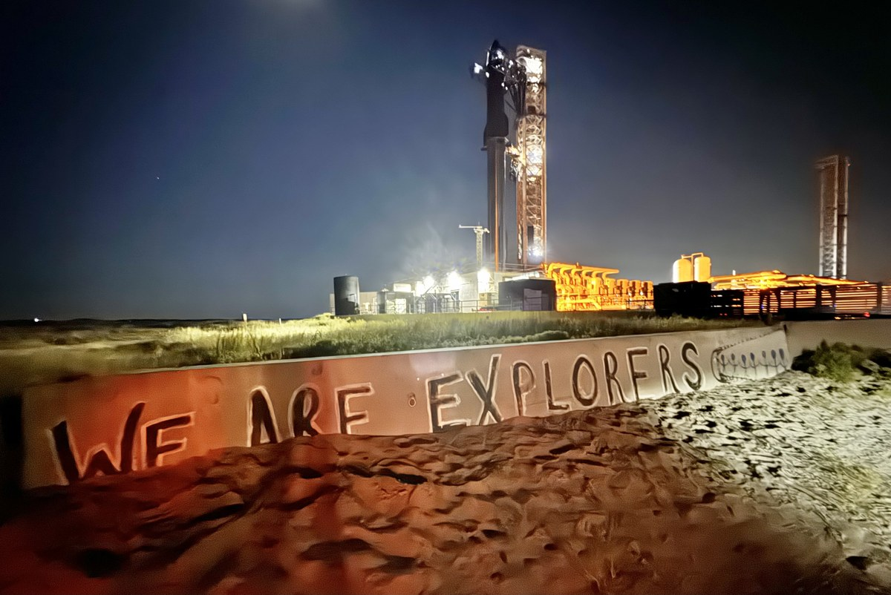
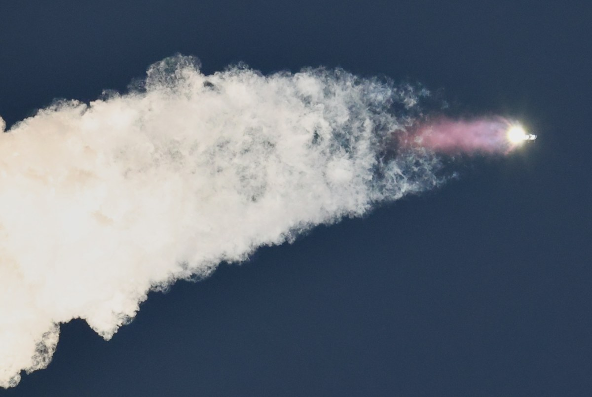
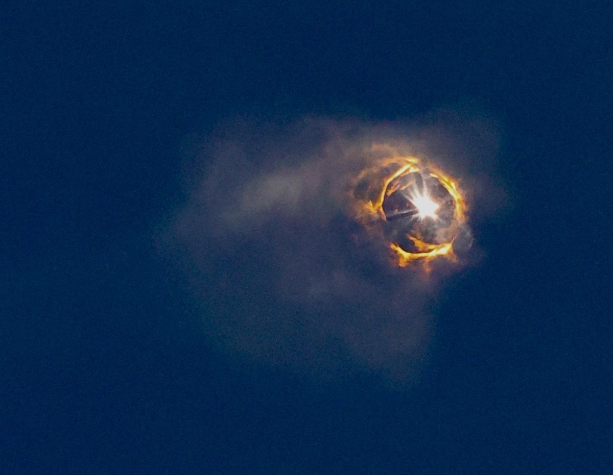
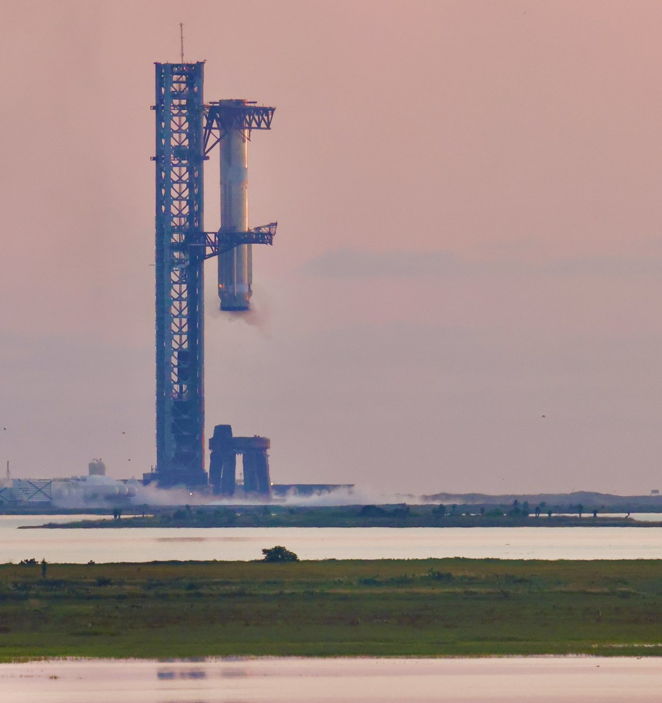

Galerie
Fotografiile urmăresc al cincilea zbor de test: racheta pe rampă, lansarea, separarea treptelor și boosterul Super Heavy după recuperare.




Momentul recuperării
Revenirea boosterului la turn este unul dintre cele mai impresionante momente ale zborului.
Imagine recomandată
Pe ecrane de maximum 800px apare Starship pe rampă, fotografiat de la sol. Pe ecrane mai mari apare o fotografie a rachetei în zbor, privită de jos spre cer. Redimensionează fereastra pentru a vedea schimbarea fotografiei.
Video
Înregistrarea prezintă revenirea și prinderea boosterului Super Heavy la zborul 5. Boosterul coboară spre brațele turnului, iar înregistrarea păstrează sunetul original al revenirii și al spectatorilor.
Audio
Ascultă 20 de secunde din vuietul motoarelor la prima lansare de test Starship, pe 20 aprilie 2023.
Mai multe informații
În cadrul de mai jos poți citi despre treptele rachetei și rolul turnului de lansare.